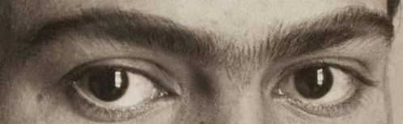

Deze website wordt gehost vanaf Github Pages. Klik je op accepteren? Dan ga je ermee akkoord dat Github bepaalde gegevens van jou kan verwerken, zoals bijvoorbeeld je IP-adres. (Github gebruikt deze gegevens voor o.a. beveiliging van de website)
Deze website maakt zelf geen gebruik van cookies.